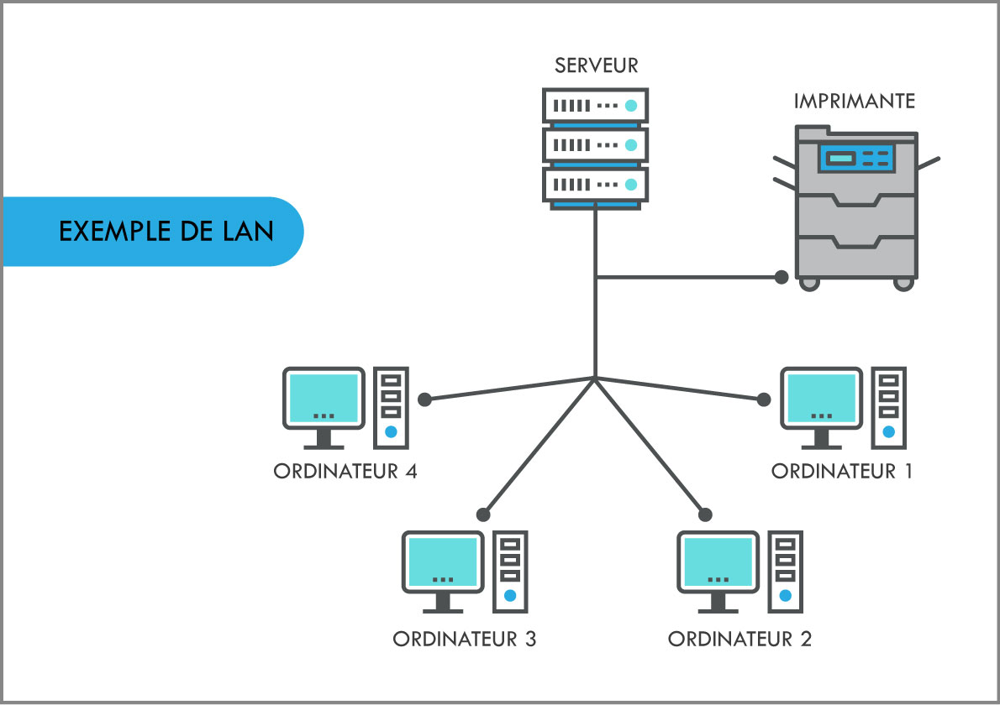
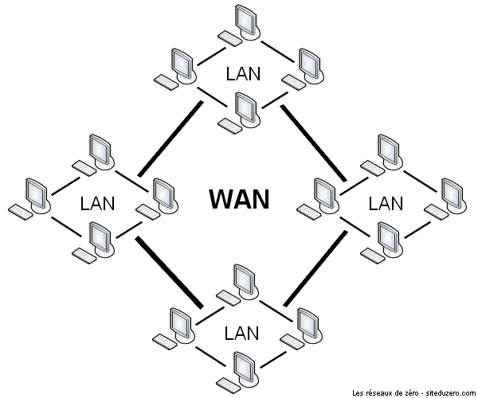

Pour effectuer une classification, il faut préciser le critère de la classification. Il existe plusieurs critères de classification pour les réseaux téléinformatiques, on cite principalement: la taille en terme de nombre de machines, la vitesse de transfert des données ou débit, et l'étendue géographique.
Les réseaux privés sont des réseaux appartenant à une même organisation. Il existe 5 catégories de réseaux selon les critères précédemment cités :
La connexion physique qui relie ces types de réseaux peut être câblée (filaire) ou bien réalisée à l’aide d'une technologie sans fil.
Pour permettre l'échange de données entre divers appareils, ces derniers peuvent être connectés à un réseau adapté. Il peut s'agir d'un PAN, on parle également de réseau domestique ou de réseau personnel.
Les techniques de transmission courantes sont l'USB (Universal Serial Bus) ou le FireWire. Le réseau personnel sans fil appelé WPAN (Wireless Personal Area Network) est basé sur des technologies sans fil tels que le Bluetooth, l'USB sans fil ou WUSB, Insteon, IrDA, ZigBee ou Z-WAVE. Un réseau personnel sans fil qui peut être réalisé par l’intermédiaire du Bluetooth est appelé "Piconet". Les PAN et les WPAN ne couvrent généralement que quelques mètres et ne sont pas adaptés pour connecter des appareils se trouvant dans des pièces ou bâtiments différents.
En raison de la portée limitée et d’un taux relativement faible de transfert de données, les PAN sont principalement utilisés pour relier des périphériques pour un usage récréatif. Les exemples typiques sont les écouteurs sans fil, les consoles de jeu et les appareils photo numériques. Dans le contexte de l’Internet des objets ("Internet of Things" en anglais), les WPAN sont utilisés pour la communication, le contrôle et la surveillance des applications à faible débit de données. Des protocoles sont spécifiquement conçus pour la domotique comme Insteon, Z-Wave et ZigBee précédemment cités.
En plus de permettre la communication de plusieurs appareils entre eux, un réseau personnel permet également la connexion à d’autres réseaux, généralement plus grands.
Quand plus de deux ordinateurs doivent être réunis au sein d'un même réseau, cela se fait généralement sous la forme d’un LAN également appelé réseau local. Il s'agit d'un réseau sous sa forme la plus simple et la plus courante, ce type de réseau couvre une zone géographique relativement restreinte comme par exemple une salle informatique, une habitation, un bâtiment ou un site d'entreprise.
La taille d'un réseau local varie de 2 jusqu'à 1000 utilisateurs environ, à condition que ceux-ci soient situés dans la même zone géographique. Lorsque le nombre d'utilisateurs devient élevé, des composants supplémentaires tels qu'un Hub Ethernet, un Bridge ou un Switch sont nécessaires. Ils agissent alors comme des éléments de couplage et des nœuds de distribution. Par rapport aux autres réseaux, un LAN est conçu pour permettre un transfert rapide de grandes quantités de données entre les machines : selon le moyen de transmission utilisé, le débit de donnée varie de 10 à 1000 Mbit/s environ.
Lorsqu'un réseau local est implémenté par technologie sans fil, on le nomme WLAN (Wireless Local Area Network) pour réseau local sans fil. La portée d’un WLAN est tributaire de la norme utilisée et du support de transmission, pouvant être augmenté par un répéteur.
Plusieurs LAN à proximité géographique peuvent être reliés ensembles afin de former un MAN (Metropolitan Area Network) ou un WAN (Wide Area Network).
Un MAN (ou réseau métropolitain) est un réseau de télécommunication à large bande qui relie plusieurs LAN géographiquement à proximité. Les routeurs de haute performance et les connexions de fibres optiques hautes performances qui sont utilisés permettent de fournir un débit de données beaucoup plus élevé que l’Ethernet (la vitesse de transmission entre deux nœuds éloignés est comparable à la communication dans un réseau local). Son infrastructure est assurée par les opérateurs de réseaux internationaux (voire locaux).
Un réseau Métropolitain qui est implémenté par radio est appelé WMAN (Wireless Metropolitan Area Network) pour réseau Métropolitain sans fil. La technologie WiMAX (Worldwide Interoperability for Microwave Access) permet de connecter des abonnés au service mais dans une zone géographique plus large et avec un meilleur débit que le WiFi.
Alors que les réseaux métropolitains relient des zones qui se trouvent proches les unes des autres dans des zones rurales ou urbaines, les WAN ou réseaux étendus couvrent des vastes zones géographiques à l’échelle d’un pays ou d’un continent par exemple. En principe, le nombre de réseaux locaux ou d’ordinateurs connectés à un réseau étendu est illimité.
Alors que les LAN et MAN peuvent être réalisés en raison de la proximité géographique des ordinateurs connectés, les réseaux étendus utilisent des techniques comme IP/MPLS (MultiProtocol Label Switching ), PDH (Plesiochrone Digitale Hierarchie), SDH (Synchrone Digitale Hierarchie), SONET (Synchronous Optical Network), ATM (Asynchronous Transfer Mode)...
Les réseaux étendus sont généralement détenus par une organisation ou une entreprise et sont donc exploités en privé ou loués. Ainsi, les fournisseurs de services Internet utilisent des WAN pour connecter les réseaux locaux d’entreprises et les clients à Internet.
Un réseau mondial comme Internet est aussi appelé GAN (Global Area Network). Internet n’est cependant pas le seul réseau informatique de ce type, les entreprises actives au niveau international maintiennent également des réseaux isolés qui couvrent plusieurs WAN et connectent ainsi des ordinateurs d’entreprise dans le monde entier. Les GAN utilisent la fibre optique des réseaux étendus et combinent ces derniers avec des câbles sous-marins internationaux ou des transmissions par satellite.